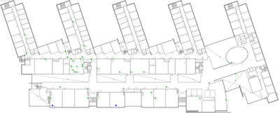
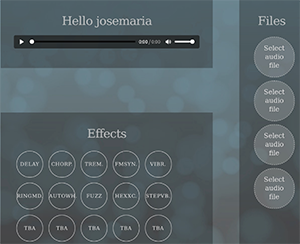
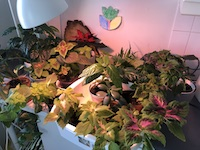
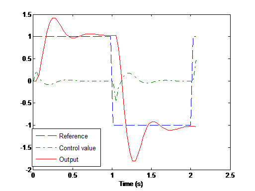
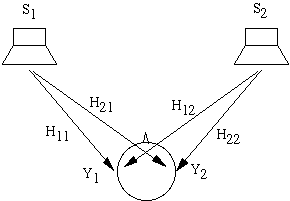

Bio
I lead complex, multidisciplinary technical projects.
As a Technical Lead and systems engineer, I specialize in directing deep-tech hardware, embedded firmware, and biomedical algorithms from initial concept to validated product. My leadership spans the ARPA-H Research to Business (R2B) initiative at Aalto University, representing Emfit Oy as technical delegate in European Union consortia, prototyping next-generation wearables at Huawei Concept Lab Helsinki, conducting clinical signal processing at Tampere University Hospital (TAYS), and contributing to the EU FP7 program at Philips Research.
With degrees in telecommunications and a PhD in biomedical engineering from Tampere University, I bridge the gap between sensor hardware, machine learning algorithms, clinical validation, and business translation. I am currently focusing on leading technical projects as Technical Lead in healthtech, physiological sensors, wearables, or AI-driven medical devices.
For a more detailed CV, ask me for my CV in PDF. My ORCID: 0000-0003-3485-0874
Technical Leadership & Industry Track Record
- Technical Lead — ARPA-H Research to Business (R2B) Project: Directing end-to-end technical execution across sensor architecture, embedded firmware, custom electronics, biomedical algorithms, and system verification & validation (V&V) testing at Aalto University.
- Health Scientist — Emfit Ltd (Emfit Oy): Represented the company as Health Scientist in two European Union consortia; led algorithm design and validation for unobtrusive sleep monitoring and acoustic snoring detection.
- Wearables R&D Researcher — Huawei Helsinki Concept Lab: Led biosignal evaluation (PPG, EMG, ECG), prototype hardware testing, and motion-artifact cancellation algorithms for smartwatch platforms.
- Clinical Systems Lead — Tampere University Hospital (TAYS): Spearheaded clinical data acquisition protocols, ICU continuous EEG monitoring algorithms, and sleep laboratory polysomnography (PSG) sensor calibrations.
- Consortium Contributor — Philips Research Laboratories (Aachen, Germany): Contributed to the European Commission FP7 “MyHeart” consortium on wearable cardiovascular monitoring systems.
I defended my thesis in June 2025 at Tampere University, Finland, specializing in sleep monitoring and signal processing. Read the Tampere University research announcement. I was also featured in the national press: read the feature news article.
Outside research, I play piano and explore how music and technology intersect, often inspiring my signal processing projects. As a strange quirk... I do enjoy reading patents.
Research
The topic of my doctoral thesis is centered on sleep, unobtrusive sensors and mattress sensors (such as Beddit, Emfit (electromechanical film transducer) mattress , Fitbit, Firstbeat, raw accelerometers like traxmeet). The thesis proposes several state-of-the-art methods for detecting snoring, breathing efforts, breathing patterns, and heart rate detection algorithms.Research Lines
- Wrist EMG for Smartwatch PPG Heart Rate Accuracy (IEEE Sensors Journal 2022)
- Snoring detection in Emfit mattress sensor
- Breathing disorders - Breathing efforts using Emfit mattress sensor
- Heart beat detection in Emfit mattress sensor
- Breathing detection using video and other signals
- Intensive Care Unit (ICU) EEG trends I wrote software to analyze EEG trends in intensive care patients, an ongoing project I was supporting (2021) - When the time comes I share the Git Project.
Community projects
- locally-informed, this is the only community project I have participated back in 2020. Updating information from Finland.
Audio / Sound Projects
- Spatial Sound & Sound Synthesis using Csound: A project on 3D spatial sound and acoustic wave synthesis from a course on "Sound and Wave Engineering" back in 2003/2004 (Universidad de Valladolid) with classmate Ariana, inspired by Richard Boulanger's Csound work. We documented spatial audio opcodes, HRTF models, and created custom examples. You can browse the modernized documentation in English, in Spanish, or explore the preserved original 2004 historical archive (Universidad de Valladolid, LPI-UVa).
- Acoustic Source Localization & Vehicle Tracking: Educational project from the Advanced Audio Processing course at Tampere University (supervised by Pasi Pertilä). Explores how an 8-channel circular microphone array (miniDSP UMA-8) and Steered Response Power with Phase Transform (SRP-PHAT) beamforming algorithms passively localize and track moving vehicles in road traffic. Read the educational project tutorial or view the source code on GitHub.
Resources
Sleep monitoring, physiological sensors & wearables:
- Snoring Detection (Emfit mattress sensor, ML)
- Wrist EMG & PPG (Smartwatch heart rate)
- Breathing Efforts (Partial obstruction)
Computational electrophysiology & FEM modeling:
- COMSOL Action Potential (FitzHugh-Nagumo FEM)
- Sensor Telemetry Monitor (Wireless hardware)
Spatial acoustics, microphone arrays & wave synthesis:
- Sound Localization (UMA-8 array, SRP-PHAT)
- Csound 3D Audio (HRTF, spatial synthesis)
Publications
PhD Thesis (2025)
-
Methods for Snoring and Heart Pulse
Detection Using Unobtrusive Mattress Sensor (2025), Doctoral Dissertation,
Tampere University, Faculty of Biomedical Sciences and Engineering, Tampere University, 2025.
ISBN
978-952-03-2952-0 (print), ISBN 978-952-03-2953-7 (pdf), URN:
http://urn.fi/URN:ISBN:978-952-03-2953-7
Related news: Tampere University News Announcement
Journals
- Nokelainen P, Perez-Macias JM, Himanen SL, Hakala A, Tenhunen M. Methods for Detecting Abnormal Ventilation in Children - the Case Study of 13-Years old Pitt-Hopkins Girl.,Child Neurol Open. 2023 Feb 20;10:2329048X231151361. doi: 10.1177/2329048X231151361. PMID: 36844470; PMCID: PMC9944179
- S. Friman, A. Vehkaoja and J. M. Perez-Macias. The Use of Wrist EMG Increases the PPG Heart Rate Accuracy in Smartwatches, in IEEE Sensors Journal, vol. 22, no. 24, pp. 24197-24204, 15 Dec.15, 2022, doi: 10.1109/JSEN.2022.3219297
- Detection of snores using source separation on an Emfit signal JM Perez-Macias, M Tenhunen, A Värri, SL Himanen, J Viik. IEEE Journal of Biomedical and Health Informatics
- Spectral analysis of snoring events from an Emfit mattress. JM Perez-Macias, J Viik, A Varri, SL Himanen, M TenhunenPhysiological measurement 37 (12), 2130 3 2016
- Snoring detection with emfit sleep mattress. JM Perez-Macias, SL Himanen, J Viik, M Tenhunen. JOURNAL OF SLEEP RESEARCH 25, 159-160 2016
- The use of crowdsourcing for dietary self-monitoring: crowdsourced ratings of food pictures are comparable to ratings by trained observers. GM Turner-McGrievy, EE Helander, K Kaipainen, JM Perez-Macias, ...Journal of the American Medical Informatics Association 22 (e1), e112-e119 9 2014
- Spectral changes in spontaneous MEG activity across the lifespan. C Gómez, JM Pérez-Macías, J Poza, A Fernández, R HorneroJournal of neural engineering 10 (6), 066006 10 2013
Conferences
- Heart pulse demodulation from Emfit mattress sensor using spectral and source separation techniques.. JM Perez-Macias, M Tenhunen, A Värri, SL Himanen, J Viik. 2022 Computing in Cardiology (CinC)
- Time characteristics of prolonged partial obstruction periods using an Emfit mattress. JM Perez-Macias, J Viik, A Värri, SL Himanen, M Tenhunen EMBEC & NBC 2017, 775-778 2017
- Detection and Assessment of Sleep-Disordered Breathing with Emfit Mattress. M Tenhunen, J Hyttinen, J Viik, JM Perez-Macias, SL HimanenEMBEC & NBC 2017, 173-176 2017
-
Assessment of support vector machines and
convolutional neural networks to detect
snoring using Emfit mattress
Jose M. Perez-Macias, Sharath Adavanne, Jari Viik, Alpo Värri, Sari-Leena Himanen, and Mirja Tenhunen, The Engineering in Medicine and Biology Conference (EMBC 2017) (read early conference draft PDF) - Comparative assessment of sleep quality estimates using home monitoring technology. JM Perez-Macias, H Jimison, I Korhonen, M PavelEngineering in Medicine and Biology Society (EMBC), 2014 Annual ... 9 2014
- Sleep monitoring data validation using a linear discriminant classifier. JM Perez-Macias, M Pavel, I Korhonen, H Jimison7th annual Canadian Student Conference on Biomedical Computing and ... 2014
Honors & Awards
- Nokia Scholarship Award 2017 (PDF)
- Suomalainen Tiedeakatemia Scholarship awards 2015, 2016, 2017
- University of Valladolid Fellowship 2011–2015
- Erasmus Scholarship award for studying at Chalmers School of Technology (2007)
Patents
Organizational Leadership & Community
- Toastmasters International: Club President and VP Membership — executive communication, team coaching, and leadership development.
- IEEE Finland Section: Secretary of the Board, IEEE Signal Processing and Circuits and Systems (SP/CAS) Joint Chapter (2020–2024).
- BEST (Board of European Students of Technology): Corporate fundraising team member driving industry sponsorships across European technical universities.
- Academic Event Organization: Organizer for the Best MSc and PhD Thesis Award Ceremonies (2023, 2024).
Membership
- IEEE Engineering in Medicine and Biology Society (Member)
- European Sleep Research Society (Member)
- IEEE Signal Processing Society
Invited Journal reviewer
- NPJ digital Medicine - Nature (since 2020)
- IEEE sensors Journal - IEEE (since 2023)
- Biomedical physics & engineering express - IOP Publishing (since 2024)
- Measurement Science and Technology - IOP Publishing (since 2024)
Invited Conference reviewer
- EMBEC17, NBC17
Teaching
- Have not taught besides private lessons.
Research Projects
Simulation Projects View Simulation Hub →
COMSOL Simulation of an Action Potential
Finite element computational modeling of nerve axon excitability using the
FitzHugh-Nagumo (FHN) reaction-diffusion PDE system coupled with
extracellular electrostatics at TUT.
Read Educational Tutorial
→ • ▶ Watch on YouTube
Wireless Physiological Sensor Monitor

A multi-channel wireless sensor telemetry monitor deployed at Tampere University of
Technology. Developed in C for real-time continuous sensor data acquisition and robust
wireless streaming.
View Details →
Random & Side Projects View Full Showcase →
TimeLapse with a Raspberry Pi
This is a timelapse from my house. Note how everything is already dark (winter in
Finland), but also, how the goods are arriving to Sale (a supermarket). Gym (GoGo), is
opening a bit before 6:00am. It was fun to set it up... I might put the code up (it is
rather simple) when I find some time. You can see the super-dupper simple code in my
Github. What can I say,
sometimes things are that simple. The video was put together using Photoshop.
▶ Watch on YouTube
RaspFX

A great project using a Raspberry Pi (link currently offline ). This is my personal webserver, hosting this project where you can upload music and add effects from PureData. The server is at home, so it might not always work (for now). This was part of a project from MediaServices with members Carita Logrén, Enrico Manuzzato, Jose Maria Perez-Macias, and Ugur Kar. I also leave some .wav files for testing since I remember they needed to have an specific sampling rate.
File1, File2, File3Watering my plants when I am away

Hoping to stop killing my plants when I go on holiday (soon to be uploaded). I basically have a basic script in a RaspBerry Pi for the lights. I bought some special medical pumps to water them and control the doses, but has proven a bit more complicated than that.
Animals
This is a game for kids. Developed in Meteor. It can be used on the phone, or iPad, as long it is not a very old iPad (iPad 1) because it becomes very slow (soon to be uploaded on a server).
Microcontroller House alarm with Keypad
Project from back in 2006 usign an Intel Microcontroller Github Link
Bus ticket Project
My first program in C++ (with my classmate Alberto Leon), we got an awesome grade! It is a bus ticket software to buy tickets to different destinations. Using Linked Lists and OO programing. Github Link
Real Time Control

This is a realtime control using a realtime operating system (Xenomai) me and my classmate developed (Github Link). In Chalmers, they were developing leading research to solve a problem of control over networks (nowadays everything is a network).
Csound 2003/2004

This is a super old project done in Csound about Sound
of Localization, from an old course of "Sound and Wave Engineering back in 2003/2004. It
is funny to see how much interest I still have in Sound, Biosignals...1D
signals/timeseries.
Still remember Richard Boulanger!!
The project was about using Csound, documenting it. And finally we created two examples
made by ourselves.
The original site is still preserved with all audio examples, and I also built a modern responsive version. You can explore the modern documentation
here in English (en Español), or browse the preserved original 2004 university project
here (historical archive).
Sound localization
Project from Advanced Audio Processing
Other projects
I have been working on different projects as a copywriter, and also another one more dedicated to science communication.
This one is about sensors and promoting sensors. There is also a project of educating and reference material for the public based on research. Sensor Salud
This other was meant to promote what it another, but a bit abandoned at the moment. Sleep Coaching and Research